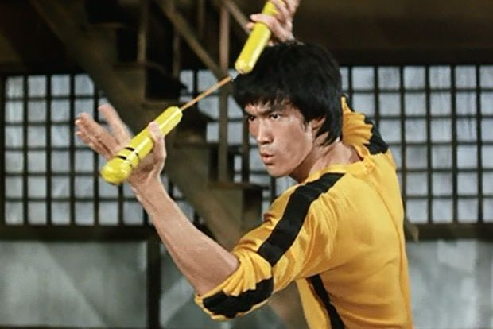
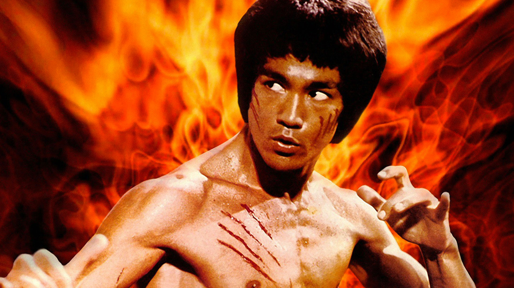
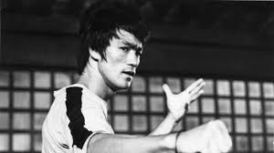
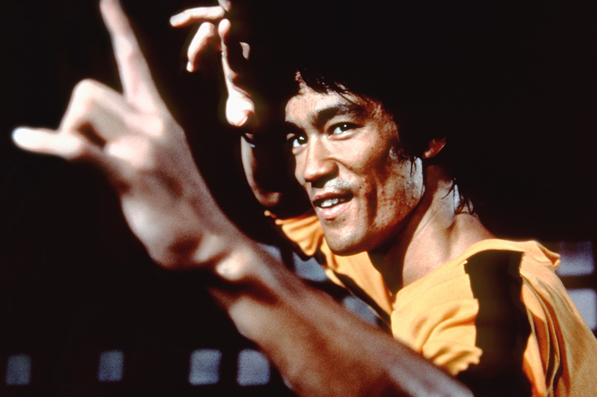
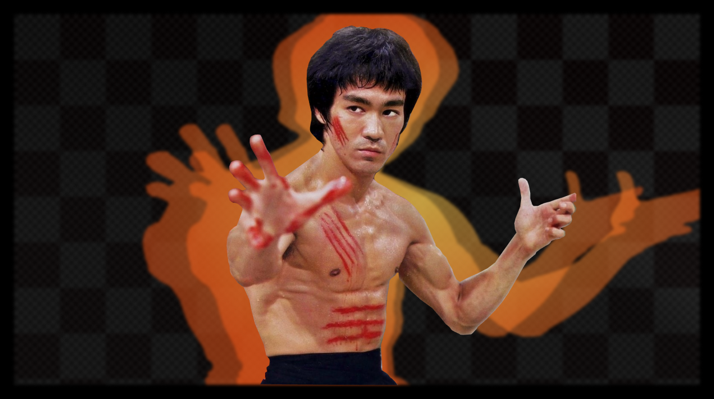
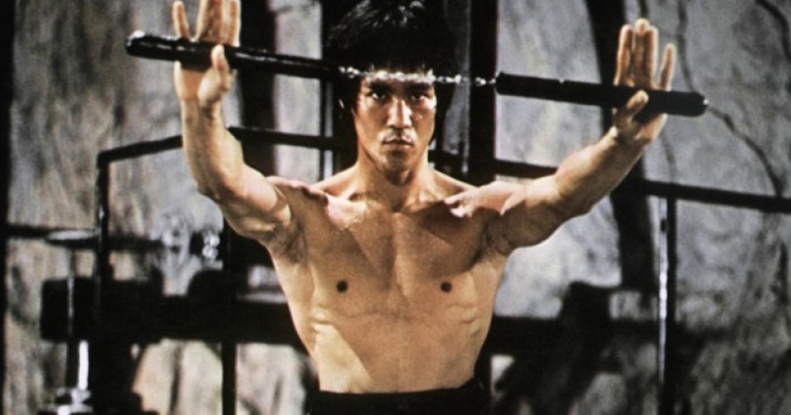
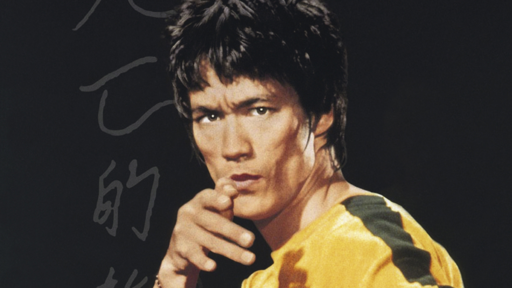
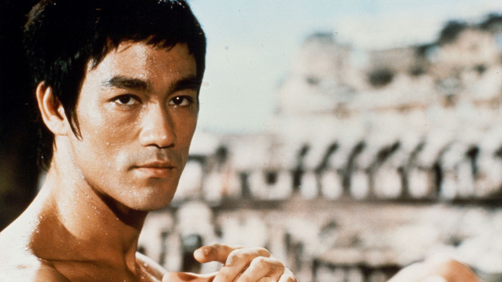
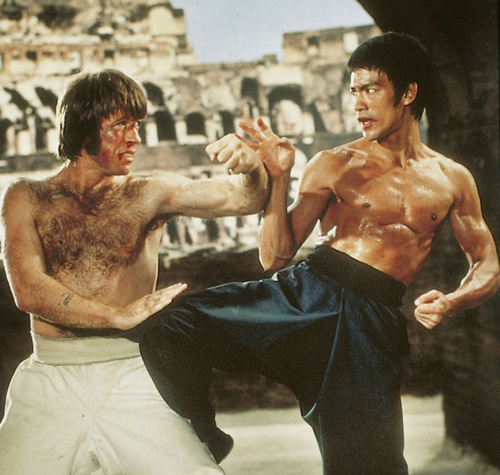

Bruce Lee









One Of The Greatest All Time Kung Fu Fighter.
Bruce Lee (Chinese: 李小龍), was a Hong Kong American actor, director, martial artist,
martial arts instructor and philosopher.[2] He was the founder of Jeet Kune Do, a hybrid
martial arts philosophy drawing from different combat disciplines that is often credited
with paving the way for modern mixed martial arts (MMA). Lee is considered by commentators,
critics, media, and other martial artists to be the most influential martial artist of all
time and a pop culture icon of the 20th century, who bridged the gap between East and West.
He is credited with helping to change the way Asians were presented in American films.[3]